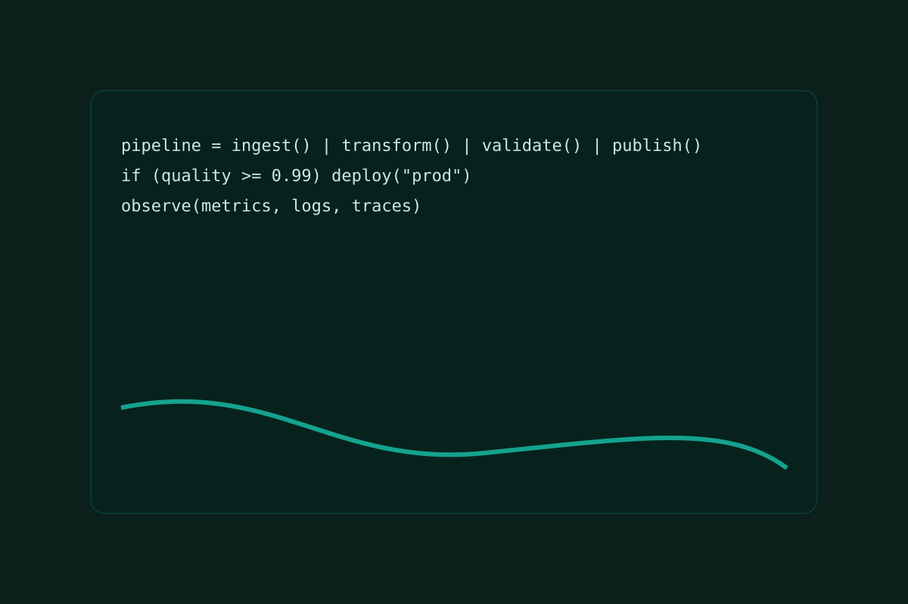
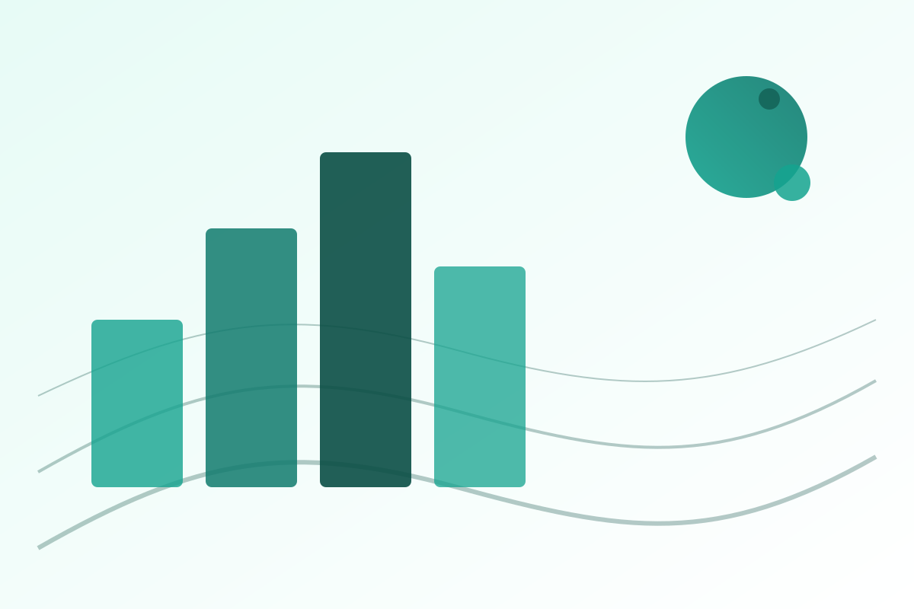
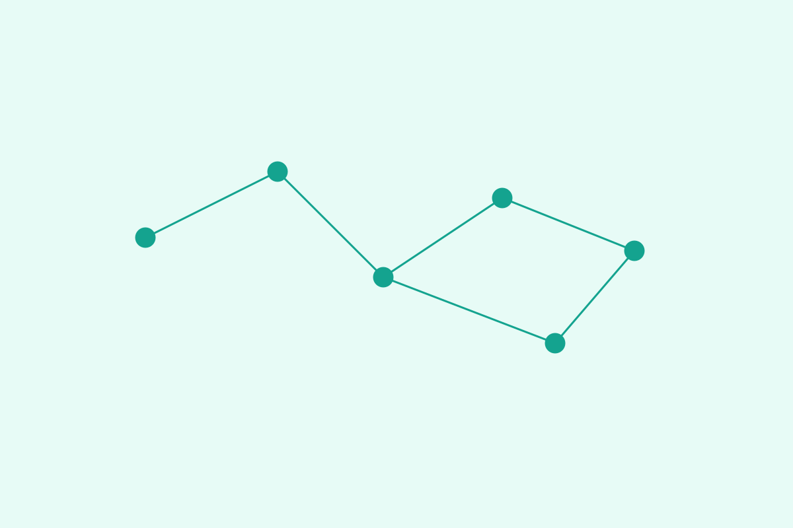

Analytics you can **trust**
Composable data stacks with version control, testing, and CI/CD. **Never doubt a dashboard number again.**
See our data solutions →We build **software-driven analytics platforms**—data pipelines, lakehouse architecture, and decision-ready dashboards—so your teams can move faster with **unquestionable confidence**.


Composable data stacks with version control, testing, and CI/CD. **Never doubt a dashboard number again.**
See our data solutions →
Secure, cost-aware architectures on AWS/Azure/GCP. Infrastructure that scales seamlessly, ready for any spike in demand.
Explore platform engineering →Fast dashboards and semantic layers that make the right metric obvious to everyone, instantly accelerating business decisions.
Learn about our product work →dbt, lakehouse patterns, robust testing, and governance to keep data trustworthy.
Encryption, IAM, and auditability across pipelines, storage, and applications.
Short iterations, CI/CD, and observability—so you ship features without surprises.